Tutorial for Gage R&R Study
Tutorial-GG
Notes for Starting
- Start this tutorial with the app Gage Study installed. If you have not installed the app, see Apps for Origin to find and install the app. Look for the app icon
 in the Apps Gallery window.
in the Apps Gallery window.
- Right-click on the app icon and select Show Sample Folder to access the sample project used in this tutorial.
 |
Topics for Further Reading:
|
Type 1 Gage Study
Background
The engineer seeks to assess the measurement system's capability to consistently and accurately measure parts within a tolerance range of 0.1.
Steps in Origin
- Open folder 1. Type 1 Gage Study.
- Highlight column A in worksheet. Click the Type 1 Gage Study icon .
- In the Input tab of the opened dialog, column A is selected automatically as Measurement Data. Set the Reference to be 5. Set Tolerance to 0.1. Make sure LimitType is set to Upper - Lower.
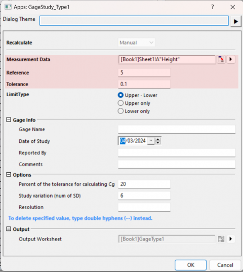
- Click OK button. A graph with report tables will be created.
Interpreting the Results
-
- In the run chart, all thickness measurements reside within the ±10% tolerance range. The p-value for bias stands at 0.2969, surpassing the significance threshold of 0.05. This suggests an absence of significant bias within the measurement system.
- The capability indices, Cg = 1.00436 and Cgk = 0.95512, fall below the standard benchmark value of 1.33, indicating the measurement system's performance is suboptimal and needs improvement. The percentage of variation attributable to repeatability is 19.9132%, and the combined variation due to repeatability and bias is 20.9397%. Both percentages exceed the 15% benchmark, pointing to a considerable amount of variation stemming from the measurement system.
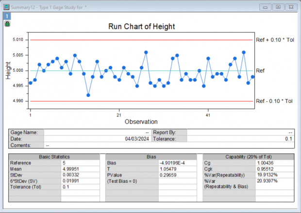
Gage Linear Bias Analysis
Background
An engineer seeks to assess the linearity and bias of a measurement gauge. 7 parts were selected, indicative of the expected range of measurements. Each operator randomly measured each part 4 times.
Steps in Origin
- Open folder 2. Gage Linear Bias Analysis.
- Highlight column A in worksheet. Click the Gage Linear Bias Analysis icon .
- Set column A as the Part Numbers. Set column B as the Reference Values. Set the column C as the Measurement Data. Set Process Variation to 23.
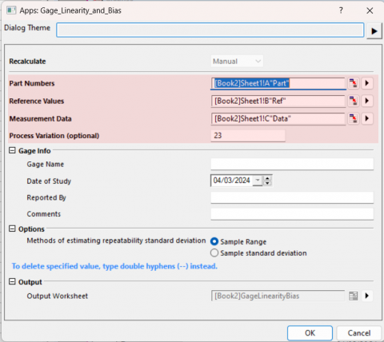
- Click OK button. A graph with report tables will be created.
Interpreting the Results
-
- %Linearity value of 11.6 indicates that the gage's linearity explains 11% of the overall process variation. The p-value for the slope being 0.000 suggests that the slope is significant.
-
- The individual %bias values vary from 0.3 to 3.7, and their p-values vary from 0.000 to 0.56. Reference value 8 do not have bias.
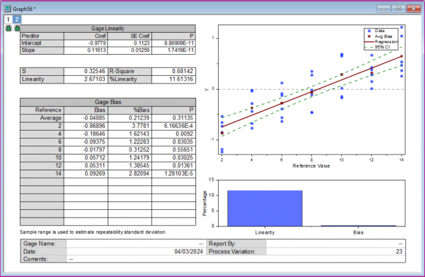
Crossed Gage R&R Study
Background
An engineer selects 10 parts that encompass the anticipated variation of the process. Three operators each measure these 10 parts three times in a randomized sequence. A crossed gage R&R study is conducted to evaluate the variability within the measurements attributed to the measurement system.
Steps in Origin
- Open folder 3. Crossed Gage R&R Study and activate the workbook in it.
- Click the Crossed Gage R&R Study icon .
- Select column A as Part Numbers. Select column B as Operatoers. Select column C as Measurement Data. Set Process Tolerance (specification limit) to be 20.
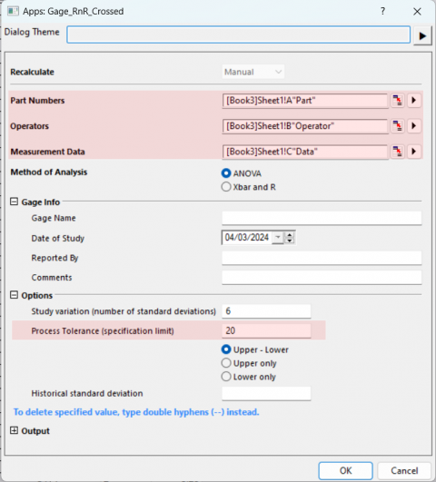
- Click OK button. A report worksheet with ANOVA table and a graph with will be created.
Interpreting the Results
-
- The two-way ANOVA table encompasses terms for the part, the operator, and the interaction between part and operator. Given that the p-value for the interaction term is 0.82062, which is greater than or equal to 0.05, the interaction term is considered not significant and is subsequently excluded. A revised ANOVA table that omits the interaction term is prepared, facilitating the conduct of the gage study.
-
- To assess the contribution of each source of measurement variation relative to the total variation, variance components (VarComp) are utilized. According to the %Contribution column in the Gage R&R table, the variation attributed to Part-To-Part is significant, accounting for 92.56% of the total. It is evident that the majority of the variation arises from differences among the parts.
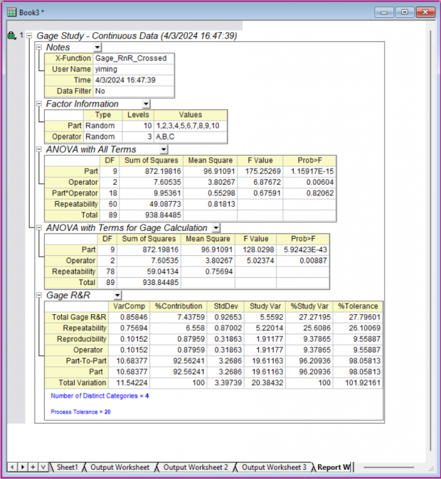
The graphs provide more information about the measurement system:
-
- In the Components of Variation graph, the %Contribution from Part-To-Part is much larger than that of Total Gage R&R indicating most of the variation is due to differences between parts.
- The R Chart by Operator shows that Operator C measures parts inconsistently.
- In the Xbar Chart by Operator, most of the points are outside the control limits. We conclude that much of the variation is due to differences between parts.
- In the Measurement By Operator graph, the differences between operators are small.
- In the Operator* Part Interaction graph, the lines are approximately parallel indicating that no significant interaction between each Part and Operator exists.
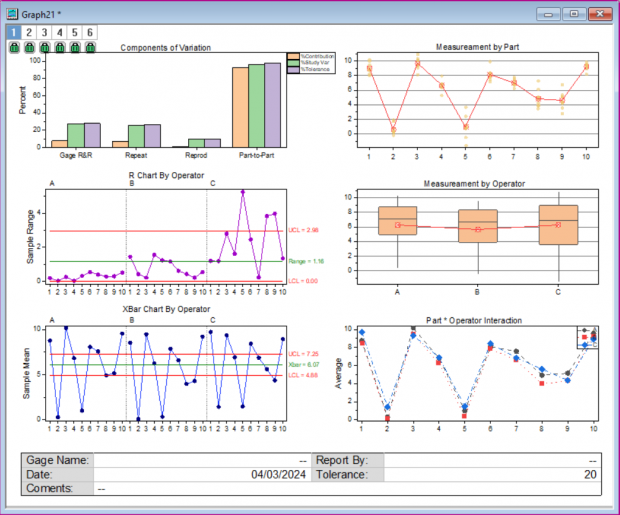
Nested Gage R&R Study
Background
When 3 operators measure 30 parts, with each operator measuring 10 of those, a Nested Gage R&R Study is appropriate to evaluate the variation in the measurement system, particularly when each operator cannot measure all parts.
Steps in Origin
- Open folder 4. Nested Gage R&R Study and activate the workbook in it.
- Click the Nested Gage R&R Study icon .
- Select column A as Part Numbers. Select column B as Operatoers. Select column C as Measurement Data.
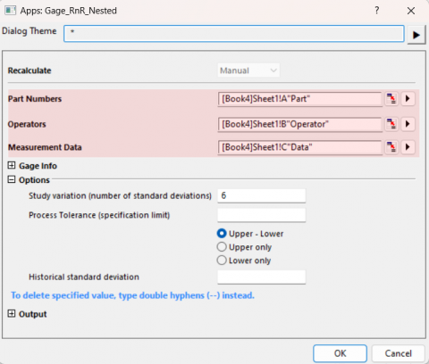
- Click OK button. A report worksheet with ANOVA table and a graph with will be created.
Interpreting the Results
-
- In the ANOVA table, the p-value for Operator is 0.04863. Given that this value is smaller than 0.05, the engineer can conclude that the average strength measurement is influenced by the operator performing the measurements. Additionally, the p-value for Part(Operator) is close to 0 and less than 0.05. This suggests that the average measurements of different parts, nested within each operator, are significantly different.
-
- To assess the contribution of each source of measurement variation relative to the total variation, variance components (VarComp) are utilized. According to the %Contribution column in the Gage R&R table, the variation attributed to gage accounts for 53.73% of the total. This suggests that the variation stemming from the gauge is substantial and exceeds acceptable limits.
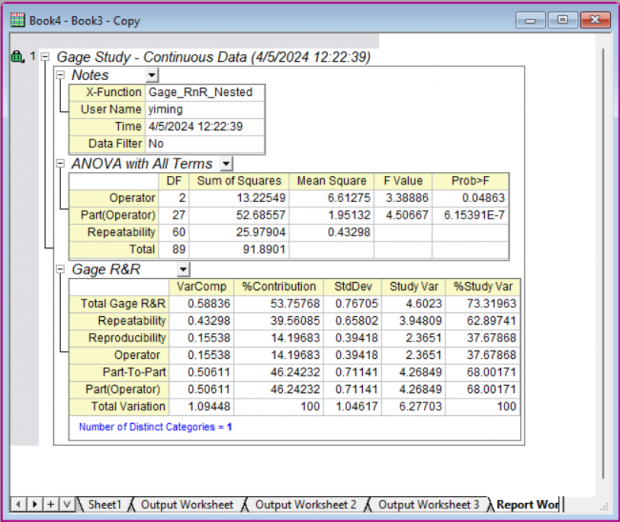
The graphs provide more information about the measurement system:
-
- In the Components of Variation graph, the %Contribution from Part-To-Part and from Total Gage R&R are close.
- The R Chart by Operator shows that Operator A measures parts consistently. Operator B and C measure more inconsistently.
- In the Xbar Chart by Operator, several points are beyond the control limits. We conclude that some of the variation is due to differences between parts. And some variation comes from other sources like the gage.
- In the Measurement By Operator graph, it shows significant differences between operators.
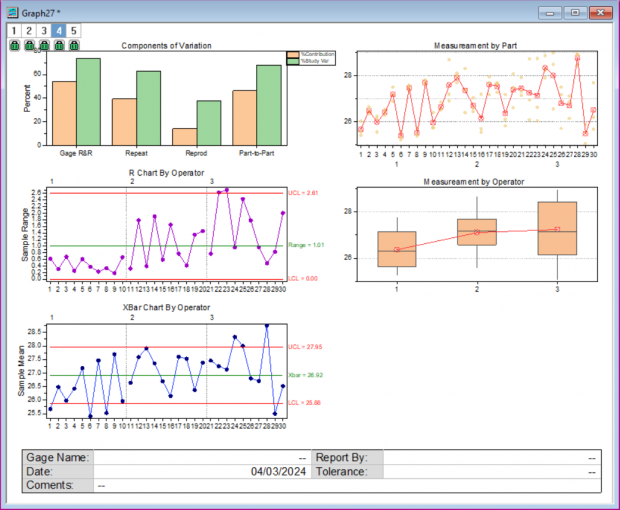
Expanded Gage R&R Study
Background
The engineer aims to evaluate the measurement system by instructing three operators to measure the length of 15 parts using tools from two departments. This study involves a fixed factor (Department), and the engineer conducts an expanded gage R&R study to evaluate the variability in measurements potentially stemming from the measurement system.
Steps in Origin
- Open folder 5. Expanded Gage R&R Study and activate the workbook in it.
- Click the Expanded Gage R&R Study icon .
- Select column A as Part Numbers. Select column B as Operatoers. Select column C as Additional Factors. Select column D as Measurement Data.
- Select Custom Model for Model Type. Click the button to the right of Model to open the Custom Model sub-dialog, add all second order interaction to the model.
- Click the button to the right of Fixed Factor, and set Department as Fixed Factor.
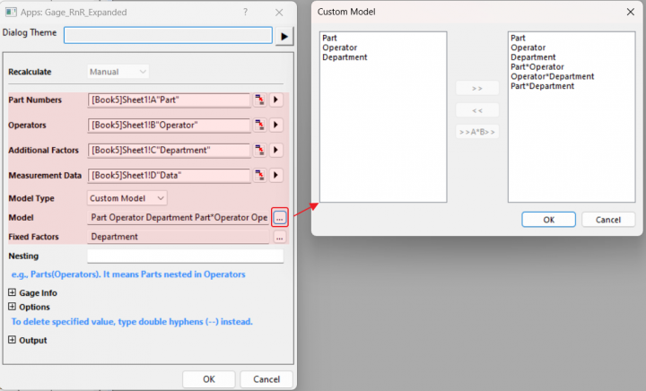
- Click OK button. A report worksheet with ANOVA table and a graph with will be created.
Interpreting the Results
-
- Factor information table shows the main factor names, type of factors (Random or Fixed), number of levels and the corresponding level names.
-
- In the initial ANOVA table, the p-values for all interactions are greater than 0.05 and thus are excluded. A reduced model is subsequently applied to generate the second ANOVA table for the Gage study. Notably, the p-value for Department is close to zero, signifying the significance of the Department factor, which requires attention.
-
- In the variance components (VarComp) table. The Part-To-Part variation only accounts for 31.22% of the total. This suggests that the variation stemming from the gage substantial and is not acceptable.
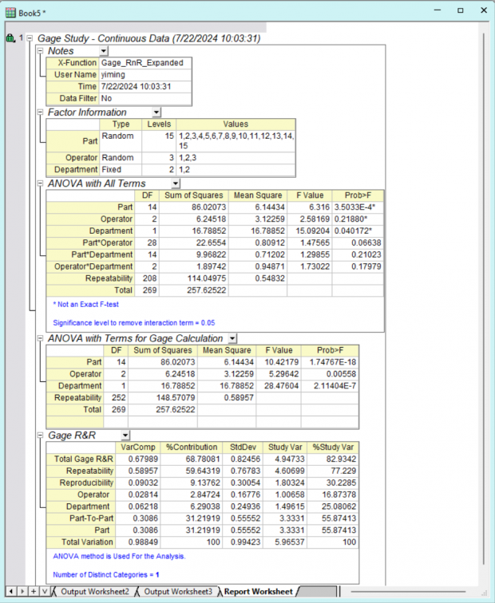
The graphs provide more information about the measurement system:
-
- In the Components of Variation graph, the %Contribution from Part-To-Part is less than the Total Gage R&R.
- The R Chart by Operator shows that all three Operators measure parts consistently.
- In the Xbar Chart by Operator, only a few points are beyond the control limits indicating the variation from differences between parts is not significant.
- In the Measurement By Operator graph, it shows significant differences between operators.
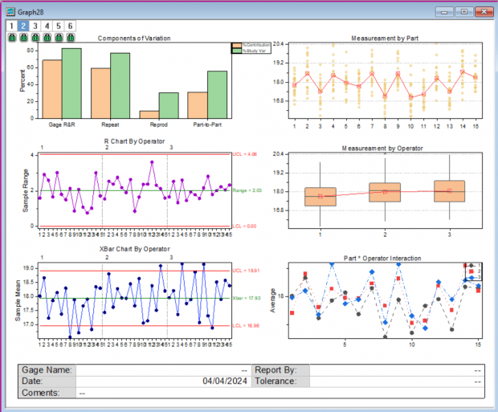
Attribute Gage Study
Background
The engineer is assessing bias and repeatability in an attribute gauge that gives a binary response. He selects 11 parts with known reference values and tests each part 20 times with a go/no-go gauge, recording the number of acceptances for each part.
Steps in Origin
- Open folder 6. Attribute Gage Study and activate the workbook in it.
- Click the Attribute Gage Study icon .
- Select column A as Part Numbers. Select column B as Reference Values. Select column C as Summarized Counts of Acceptances.
- Set Limit Value to 0.08.
- Choose AIAG method as testing method.
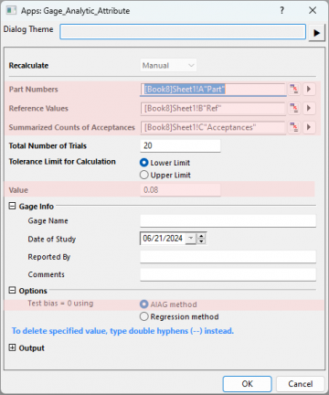
- Click OK button. A graph with report tables will be created.
Interpreting the Results
-
- The p-value for AIAG Test of Bias = 0 is less than the significance level of 0.05, we reject the null hypothesis and conclude that the attribute measurement system likely has bias.
-
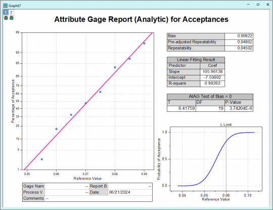
Create Gage Worksheet
Background
The engineer intends to design a data worksheet for recording measurements from operators in a randomized order.
Steps in Origin
- Click the Create Gage Worksheet icon .
- Set Number of Parts to 10. Set Number of Operators to 3. Set Number of Replicates to 3.
- Check the radio Randomize all runs.
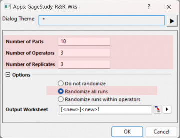
- Click OK button.